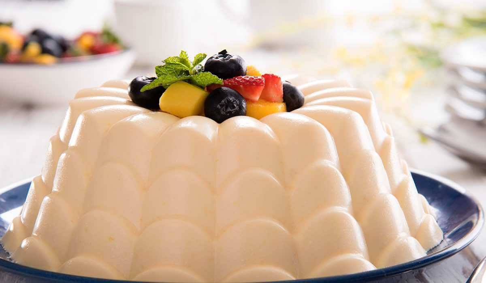

◖Coffrey◗
Gelatin-Mango
Ingredients:
190 g of Cream Cheese Philadelphia
3 cups. of milk
4 tbsp of gelatin hydrated in 1/2 tza. cold water
1 tza. of white sugar
1 mango can
Preparation:
Licuate 2 cups of milk with Philadelphia® Cream Cheese, mango pulp and sugar. Book.
Heat the remaining milk and add the previously hydrated gelatin; move to undo.
Integrate both preparations and pour into a jelly mold.
Refriger until curd.
Remove and decorate to taste.
